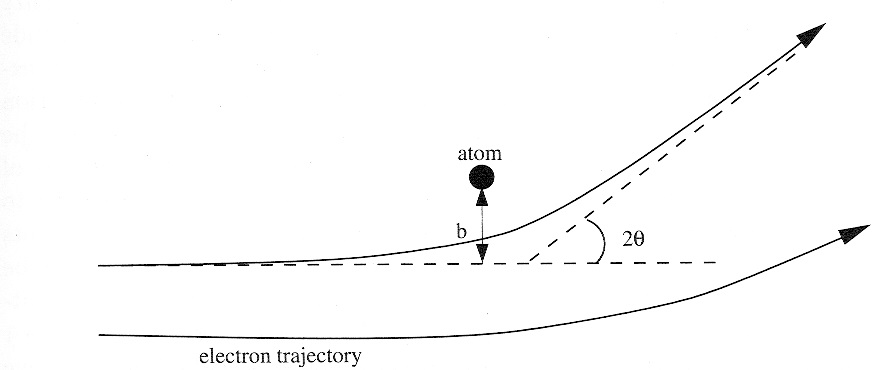
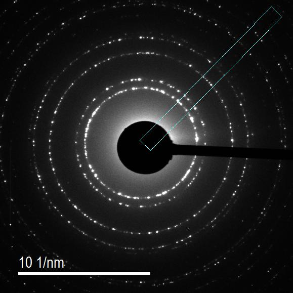
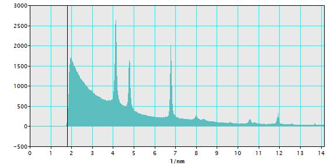

Chapter 2: Diffraction
Structure Factors¶

part of
MSE672: Introduction to Transmission Electron Microscopy
Spring 2026 by Gerd Duscher
Microscopy Facilities Institute of Advanced Materials & Manufacturing Materials Science & Engineering The University of Tennessee, Knoxville
Background and methods to analysis and quantification of data acquired with transmission electron microscopes.
Load relevant python packages¶
Check Installed Packages¶
[1]:
import sys
import importlib.metadata
def test_package(package_name):
"""Test if package exists and returns version or -1"""
try:
version = importlib.metadata.version(package_name)
except importlib.metadata.PackageNotFoundError:
version = '-1'
return version
if test_package('pyTEMlib') < '0.2026.1.3':
print('installing pyTEMlib')
!{sys.executable} -m pip install --upgrade pyTEMlib -q
print('done')
done
Load the plotting and figure packages¶
Import the python packages that we will use:
Beside the basic numerical (numpy) and plotting (pylab of matplotlib) libraries,
three dimensional plotting from matplotlib
iteration_tools
and some libraries from the pyTEMlib
kinematic scattering from the diffraction_tools library.
structures from the crystal_tools library > Note for Google Colab > > Restart Session in the Runtime Menu
[1]:
%matplotlib widget
import matplotlib.pyplot as plt
import numpy as np
import sys
if 'google.colab' in sys.modules:
from google.colab import output
output.enable_custom_widget_manager()
# 3D plotting package
from mpl_toolkits.mplot3d import Axes3D # 3D plotting
# additional package
import itertools
# Import libraries from the book
import pyTEMlib
# it is a good idea to show the version numbers at this point for archiving reasons.
__notebook_version__ = '2026.01.31'
print('pyTEM version: ', pyTEMlib.__version__)
print('notebook version: ', __notebook_version__)
pyTEM version: 0.2026.1.3
notebook version: 2026.01.31
Define Crystal¶
Here we define silicon but you can use any other structure you like.
[2]:
#Initialize the dictionary with all the input
atoms = pyTEMlib.crystal_tools.structure_by_name('silicon')
print(atoms.symbols)
print(atoms.get_scaled_positions())
#Reciprocal Lattice
# We use the linear algebra package of numpy to invert the unit_cell "matrix"
reciprocal_unit_cell = np.linalg.inv(atoms.cell).T # transposed of inverted unit_cell
Si8
[[0. 0. 0. ]
[0.25 0.25 0.25]
[0.5 0.5 0. ]
[0.75 0.75 0.25]
[0.5 0. 0.5 ]
[0.75 0.25 0.75]
[0. 0.5 0.5 ]
[0.25 0.75 0.75]]
Reciprocal Lattice¶
Check out Basic Crystallography notebook for more details on this.
[3]:
#Reciprocal Lattice
# We use the linear algebra package of numpy to invert the unit_cell "matrix"
reciprocal_lattice = np.linalg.inv(atoms.cell).T # transposed of inverted unit_cell
print('reciprocal lattice\n',np.round(reciprocal_lattice,3))
reciprocal lattice
[[0.184 0. 0. ]
[0. 0.184 0. ]
[0. 0. 0.184]]
2D Plot of Unit Cell in Reciprocal Space¶
[4]:
fig = plt.figure()
ax = fig.add_subplot(111)
ax.scatter(reciprocal_lattice[:,0], reciprocal_lattice[:,2], c='red', s=100)
plt.xlabel('h (1/Å)')
plt.ylabel('l (1/Å)')
ax.axis('equal');
3D Plot of Miller Indices¶
[5]:
hkl_max = 3
h = np.linspace(-hkl_max,hkl_max,2*hkl_max+1) # all evaluated single Miller Indices
hkl = np.array(list(itertools.product(h,h,h) )) # all evaluated Miller indices
# Plot 2D
fig = plt.figure()
ax = fig.add_subplot(111, projection='3d')
ax.scatter(hkl[:,0], hkl[:,2], hkl[:,1], c='red', s=10)
plt.xlabel('h')
plt.ylabel('l')
fig.gca().set_zlabel('k')
#ax.set_aspect('equal')
[5]:
Text(0.5, 0, 'k')
Reciprocal Space and Miller Indices¶
For a reciprocal cubic unit cell with lattice parameter \(b = \frac{1}{a}\):
Or more general
The matrix is of course the reciprocal unit cell or the inverse of the structure matrix.
Therefore, we get any reciprocal lattice vector with the dot product of its Miller indices and the reciprocal lattice matrix.
Spacing of planes with Miller Indices \(hkl\)
The length of a vector is called its norm.
Be careful there are two different notations for the reciprocal lattice vectors:
materials science
physics
The notations are different in a factor \(2\pi\). The introduction of \(2\pi\) in physics allows to take care of the \(n\) more naturally.
In the materials science notation the reciprocal lattice points are directly associated with the Bragg reflections in your diffraction pattern. (OK,s we are too lacy to keep track of \(2\pi\))
All Possible Reflections¶
Are then given by the all permutations of the Miller indices and the reiprocal unit cell matrix.
All considered Miller indices are then produced with the itertool package of python.
[6]:
hkl_max = 6# maximum allowed Miller index
h = np.linspace(-hkl_max,hkl_max,2*hkl_max+1) # all evaluated single Miller Indices
hkl = np.array(list(itertools.product(h,h,h) )) # all evaluated Miller indices
g_hkl = np.dot(hkl,reciprocal_unit_cell) # all evaluated reciprocal lattice points
print(f'Evaluation of {g_hkl.shape} reflections of {hkl.shape} Miller indices')
fig = plt.figure()
ax = fig.add_subplot(111, projection='3d')
ax.scatter(g_hkl[:,0], g_hkl[:,2], g_hkl[:,1], c='red', s=10)
plt.xlabel('u (1/A)')
plt.ylabel('v (1/A)')
fig.gca().set_zlabel('w (1/A)')
Evaluation of (2197, 3) reflections of (2197, 3) Miller indices
[6]:
Text(0.5, 0, 'w (1/A)')
Atomic form factor¶
If we look at the scattering power of a single atom that deflects an electron:

See Atomic Form Factor for details
Calculate Structure Factors¶
To extend the single atom view of the atomic form factor \(f(\theta\)) to a crystal, we change to the structure factor \(F(\theta)\). The structure factor \(F(\theta)\) is a measure of the amplitude scattered by a unit cell of a crystal structure.
Because \(F(\theta)\) is an amplitude like \(f(\theta)\), it also has dimensions of length.We can define \(F(\theta)\) as:
The sum is over all the \(i\) atoms in the unit cell (with atomic coordinates $ \vec{r}_i = [x_i, y_i, z_i]$ )
The structure factors \(f_i(\theta)\) are multiplied by a phase factor (the exponential function). The phase factor takes account of the difference in phase between waves scattered from atoms on different but parallel atomic planes with the same Miller indices$ (hkl)$.
The scattering angle \(\theta\) is the angle between the angle between the incident and scattered electron beams.
Please identify all the variables in line 10 below. Please note that we only do a finite number of hkl
[7]:
# Calculate Structure Factors
structure_factors = []
base = atoms.positions # positions in Carthesian coordinates
for j in range(len(g_hkl)):
F = 0
for b in range(len(base)):
theta = np.linalg.norm(np.dot(g_hkl[j], reciprocal_lattice)) # angle in 1/nm
f = pyTEMlib.diffraction_tools.get_form_factor(atoms[b].symbol, theta) # Atomic form factor for element and momentum change (g vector)
F += f * np.exp(-2*np.pi*1j*(g_hkl[j]*base[b]).sum())
structure_factors.append(F)
structure_factors = np.squeeze(np.array(structure_factors))
All Allowed Reflections¶
The structure factor determines whether a reflection is allowed or not.
If the structure factor is zero, the reflection is called forbidden.
[8]:
# Allowed reflections have a non zero structure factor F (with a bit of numerical error)
allowed = np.absolute(structure_factors) > 0.001
print(f' Of the evaluated {hkl.shape[0]} Miller indices {allowed.sum()} are allowed. ')
distances = np.linalg.norm(g_hkl, axis = 1)
# We select now all the
zero = distances == 0.
# allowed = np.logical_and(allowed,np.logical_not(zero))
F = structure_factors[allowed]
g_hkl = g_hkl[allowed]
hkl = hkl[allowed]
distances = distances[allowed]
Of the evaluated 2197 Miller indices 387 are allowed.
Families of reflections¶
reflections with the same length of reciprocal lattice vector are called families
[9]:
sorted_allowed = np.argsort(distances)[1:] ## remove zero
distances = distances[sorted_allowed]
hkl = hkl[sorted_allowed]
F = F[sorted_allowed]
# How many have unique distances and what is their muliplicity
unique, indices = np.unique(np.round(distances,4), return_index=True)
print(f' Of the {allowed.sum()} allowed Bragg reflections there are {len(unique)} families of reflections.')
Of the 387 allowed Bragg reflections there are 18 families of reflections.
Intensities and Multiplicities¶
In a cubic system, the all reflection belonging to one families have the same reciprocal lattice vector and the same probability of scattering.
[10]:
multiplicitity = (np.roll(indices,-1)-indices)
intensity = np.absolute(F[indices]**2*multiplicitity)
print(f"\n index \t {'hkl'.ljust(12)}\t 1/d [1/Ang] d [pm] \t F \t multip. intensity")
family = []
for j in range(0, len(unique)-2):
i = indices[j]
i2 = indices[j+1]
family.append(hkl[i+np.argmax(hkl[i:i2].sum(axis=1))])
print(f'{i:3g}\t {str(family[j]).ljust(13)} \t {distances[i]:.2f} \t {1/distances[i]*100:.0f} \t {np.absolute(F[i]):.2f}',
f'\t {indices[j+1]-indices[j]:3g} \t {intensity[j]:.2f}')
index hkl 1/d [1/Ang] d [pm] F multip. intensity
0 [1. 1. 1.] 0.32 314 32.05 8 8219.25
8 [2. 0. 2.] 0.52 192 43.49 12 22694.18
20 [3. 1. 1.] 0.61 164 30.02 24 21627.29
44 [4. 0. 0.] 0.74 136 40.83 6 10004.44
50 [1. 3. 3.] 0.80 125 28.23 24 19122.83
74 [4. 2. 2.] 0.90 111 38.48 24 35539.65
98 [3. 3. 3.] 0.96 105 26.63 32 22699.39
130 [0. 4. 4.] 1.04 96 36.38 12 15880.30
142 [3. 1. 5.] 1.09 92 25.20 48 30493.62
190 [2. 6. 0.] 1.16 86 34.48 24 28539.58
214 [3. 3. 5.] 1.21 83 23.92 24 13726.58
238 [4. 4. 4.] 1.28 78 32.77 8 8590.36
246 [5. 5. 1.] 1.31 76 22.75 24 12416.23
270 [2. 4. 6.] 1.38 73 31.21 48 46748.74
318 [5. 3. 5.] 1.41 71 21.68 24 11279.07
342 [0. 6. 6.] 1.56 64 28.47 12 9728.70
Allowed reflections for Silicon:¶
\(\ \ |F_{hkl}|^2 = \begin{cases} ( h , k , l \ \ \mbox{ all odd} &\\ ( h ,| k , l \ \ \mbox{all even}& \mbox{and}\ \ h+k+l = 4n\end{cases}\)
Check above allowed reflections whether this condition is met for the zero order Laue zone.
Please note that the forbidden and alowed reflections are directly a property of the structure factor.
Diffraction with parallel Illumination¶
Polycrystalline Sample |
Single Crystalline Sample |
|---|---|
ring pattern |
spot pattern |
depends on \(F(\theta)\) |
depends on \(F(\theta)\) |
depends on excitation error \(s\) |
Ring Pattern¶


Ring Pattern:
The profile of a ring diffraction pattern (of a polycrystalline sample) is very close to what a you are used from X-ray diffraction.
The x-axis is directly the magnitude of the \(|\vec{g}| = 1/d\) of a hkl plane set.
The intensity of a Bragg reflection is directly related to the square of the structure factor \(I = F^2(\theta)\)
The intensity of a ring is directly related to the multiplicity of the family of planes.
Ring Pattern Problem:
Where is the center of the ring pattern
Integration over all angles (spherical coordinates)
Indexing of pattern is analog to x-ray diffraction.
The Ring Diffraction Pattern are completely defined by the Structure Factor
[11]:
from matplotlib import patches
fig, ax = plt.subplots()
plt.scatter(0,0);
img = np.zeros((1024,1024))
extent = np.array([-1,1,-1,1])*np.max(unique)
plt.imshow(img, extent = extent)
for radius in unique:
circle = patches.Circle((0,0), radius*2, color='yellow', fill= False, alpha = 0.5)#, **kwargs)
ax.add_artist(circle);
plt.xlabel('scattering angle (1/$\AA$)');
Conclusion¶
The scattering geometry provides all the tools to determine which reciprocal lattice points are possible and which of them are allowed.
Next we need to transfer out knowledge into a diffraction pattern.